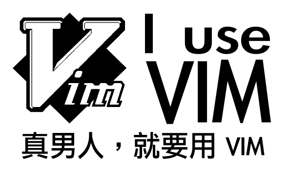
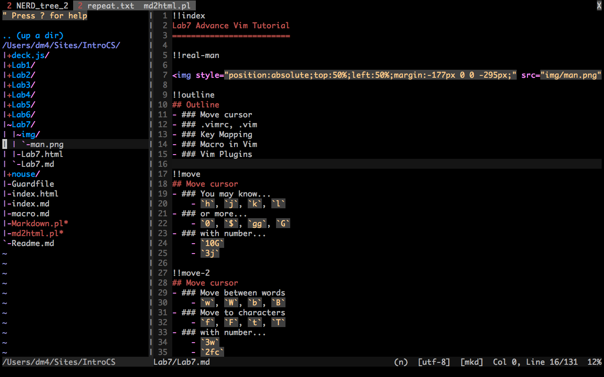

h, j, k, l0, $, H, M, L, gg, G10G3jw, W, b, Bf, F, t, T3w2fc.vimrc fileContains initialization commands
_vimrc in Windows
.vim directorymapimap for insert modenmap for normal modevmap for visual mode
nmap ; :
vmap ; :
More
nmap <C-L> :set nu!<CR>
nmap ,ev :tabnew $MYVIMRC<CR>
nmap <C-J> ddp
nmap <C-K> ddkP
nmap <F9> :w<CR>:!gcc % && ./a.out<CR>
q[register]q@[register]
TextMate-style snippets for Vim
snipMate.vim Introductory Screencast from Michael Sanders on Vimeo.
ds[surrouding]cs[before][after]<Leader> to trigger EasyMotion<Leader> is \ in Vim by default
<Leader>w
<Leader>b
<Leader>f
Zen Coding for Vim has its own ZC engine implementation.
A powerful abbreviation engine for HTML/CSS
div#page>div.logo+ul>li#$$*3>a
can be expanded into:
<div id="page">
<div class="logo"></div>
<ul>
<li id="01">
<a href=""></a>
</li>
<li id="02">
<a href=""></a>
</li>
<li id="03">
<a href=""></a>
</li>
</ul>
</div>
Meng-Han Lee (dm4) /
#